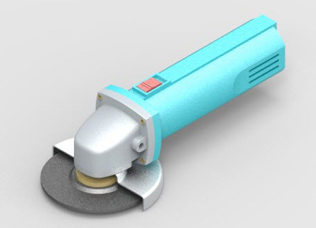

Rendering parts and assemblies
KeyShot is a standalone rendering application that has been integrated with Solid Edge since the ST7 release in 2014 (as a replacement of the Virtual Studio renderer). Since KeyShot is a standalone application, its updates and release cycles are not tied to the release cycles of Solid Edge.
When updating KeyShot using its update functionality, ensure that Solid Edge is closed before beginning the KeyShot update process.
Rendering differs from standard shaded display as the intent is to generate a single high-quality image rather than a persistent shaded representation of the model. All the parameters below are used in standard shaded display but are the components that define the parameters for a rendering as well. Once in the rendering environment, you should primarily make display settings in that environment. Using view styles affects the entire view, while using faces styles affects individual parts or single surfaces.
The other difference between shading and rendering is the method of generating the display. Shading will rely on the graphics card, whereas KeyShot rendering is strictly CPU processing.

You can use these styles to add new effects such as:
-
Anti-aliasing
-
Textures
-
Floor reflection
-
Bump maps
-
Background images and reflections
-
Shadows
-
Light color and angle
Anti-aliasing
Applying anti-aliasing to a part or assembly window reduces or removes the jagged display of angular edges. You can control the level of anti-aliasing by selecting high, medium, or low for Solid Edge shading. KeyShot doesn’t use the Solid Edge setting.
Textures
You can use an image to apply a texture to a part in an assembly. For example, you can apply texture images that represent material types such as wood, brushed aluminum, or marble.
If you are applying a .jpg texture image, it must be in RGB format. RGB is the only supported format for .jpg textures.
Floor reflection
You can apply a mirror effect on the floor underneath a part or an assembly. This provides a realistic reflection of the model.
Bump maps
You can use an image to define a bump map on a part in an assembly. Bump maps add realism by creating the appearance of surface relief shading on a part. Although both gray scale and normal formats are supported, normal maps are preferred. Normal maps provide three times the amount of data as gray scale because they contain RGB information. The algorithm converts RGB values to XYZ values for defining surface relief. The format provides for a more refined definition of the surface finish than standard gray scale. The bump map option is only supported if the High-Quality setting is selected.
Background images and reflections
You can use background images to make parts and assemblies look more realistic. For example, you might apply a background image of a road scene or construction site behind a backhoe assembly. You can also define an image which is reflected off surfaces. The same image can be used for both the background and the reflection, or separate images can be used.
Background images will be transferred on the initial creation of the *.bip file. Any changes to the background need to be done in KeyShot.
Shadows
In assemblies, you can define Face styles that define whether a part casts a shadow onto another part and whether a part accepts shadows from adjacent parts.
Light color and angle
You can assign color and angle properties to each of the eight individual light sources.
Rendering ray traced images
Ray traced shading generates part-to-part reflections, whereas standard shading does not do this. The part reflections in the assembly are reflecting onto themselves or one another. You can use the KeyShot Render command to create ray traced images of your assemblies.
Preparing the assembly
You should check to make sure all attributes and styles for the individual parts are properly set before you ray trace an assembly. You should test the view orientation, reflection boxes, and shadow settings in a simple view style to make sure the shadows and background display properly.
Once you have checked the assembly file for appropriate styles and settings, you can create a ray traced image of the file. If you are unsure about the results, you can run a small test area in ray trace mode to optimize hardware time.
Preparing the view
Use following as a checklist for preparing the view for generating an image:
-
Orient the assembly to the desired view.
-
Decide whether to generate the image in Isometric (default) or a Perspective view (more realistic).
-
Test the lighting of the assembly. Try to minimize the number of lights required to produce the preferred result as more lights impact processing time.
-
Evaluate the appearance of the shadows and adjust the lights accordingly.
-
Review the part color and set the attributes for the desired transparency, reflectivity, and shininess.
-
Define textures and bump patterns.
-
If the product has reflective surfaces, you should set up a reflection box so the parts have something to reflect.
-
Run sample images using the default quality setting to test lighting, shadows, bump maps and textures.
-
Render the complete scene with high quality setting.
Saving rendered images
To save a ray traced image, use the KeyShot Render, Save As Image or Save As Translated commands. If you want to include animation information, enter the Explode-Render-Animate environment and then use KeyShot Animate located on the animation menu.
To share a KeyShot rendered model that contains decals, the model must be saved from KeyShot as a KeyShot Package file (.ksp).